Revegetação — Bicas/MGExperiência técnica documentada
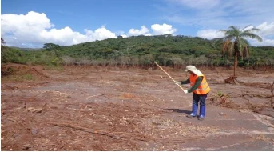
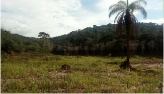
Sequência documental de área antes do plantio e registro posterior com desenvolvimento de cobertura vegetal.
Da elaboração do PRAD à execução e ao monitoramento: restauração florestal, gestão ambiental, irrigação, solos, água e geotecnologia com responsabilidade técnica.
A Ordone pode participar de todo o ciclo técnico, conforme a necessidade e as competências aplicáveis a cada caso.
Comparativos selecionados de relatórios técnicos anteriores. Quando o trabalho pertence ao acervo profissional, ele é identificado como experiência técnica documentada, sem atribuição indevida à Ordone.


Sequência documental de área antes do plantio e registro posterior com desenvolvimento de cobertura vegetal.
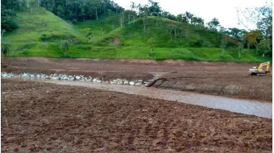
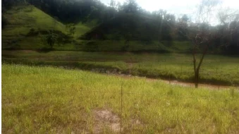
Comparativo associado a adequação topográfica, drenagem, germinação e formação de cobertura vegetal.
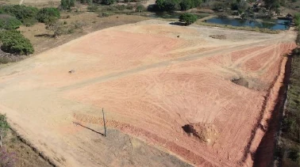
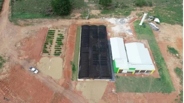
Registro aéreo da transformação da área, com viveiro implantado e estruturas de conservação do solo.
Dimensionamento e implantação de sistemas para pastagens, horticultura, fruticultura, viveiros, produção agrícola e recuperação ambiental, considerando água disponível, solo, relevo, cultura, pressão, vazão, energia e operação.
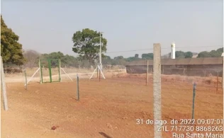
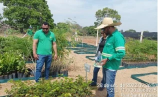
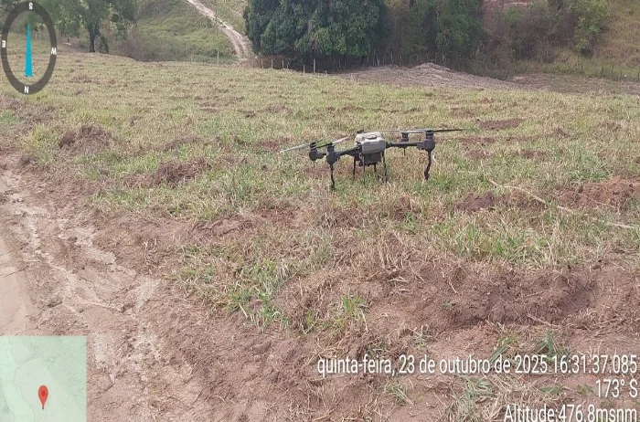
Geotecnologia e registros de campo são integrados ao diagnóstico, planejamento, execução e monitoramento — não tratados como produtos isolados.
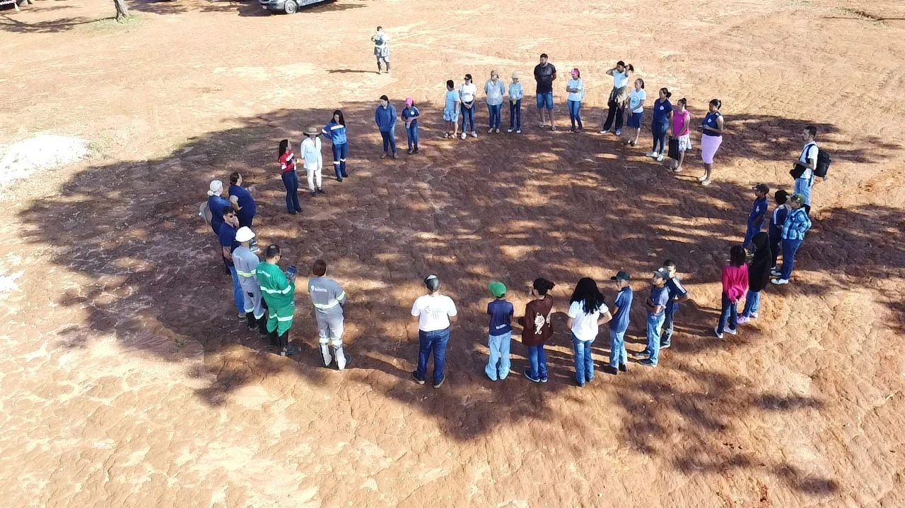
Projetos ambientais e rurais exigem presença: leitura da área, alinhamento de equipes, orientação técnica, treinamento, registros e acompanhamento da execução.
Conhecer a trajetória técnicaO objetivo é conduzir a demanda com clareza: entender o problema, estruturar o escopo, projetar, apoiar regularizações, executar quando aplicável e acompanhar os resultados.

O acervo técnico registra experimentos de campo com tratamentos comparativos para proteção e nutrição de mudas nativas do Cerrado, além de acompanhamento de irrigação e manutenção.
O conteúdo do acervo é organizado em evidência documental, interpretação técnica, conteúdo didático e ferramentas úteis para novas demandas.
A Ordone passa a funcionar também como porta de entrada para painéis públicos que ajudam a compreender queimadas, desmatamento, água, clima, seca, geologia, mineração e regularização.
A V6.8 faz varredura nacional em fontes públicas, prioriza oportunidades aderentes ao portfólio da Ordone e bloqueia obras civis sem serviço ambiental autônomo. Nenhum contato é enviado sem validação humana.
Painéis do Programa Queimadas com focos ativos, risco e produtos de monitoramento.
Abrir monitor ao vivo →Consulta aos dados geográficos do PRODES e DETER, incluindo Cerrado.
Abrir TerraBrasilis →HidroWeb, telemetria hidrometeorológica e Monitor de Secas do Brasil.
Abrir HidroWeb →Mapas meteorológicos, precipitação, temperatura, avisos e estações.
Abrir INMET →A seleção prioriza execução, método e evidência de campo.
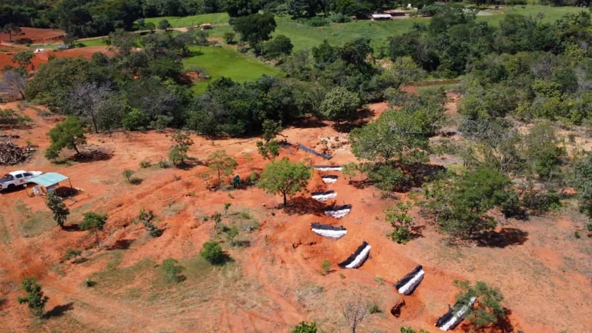
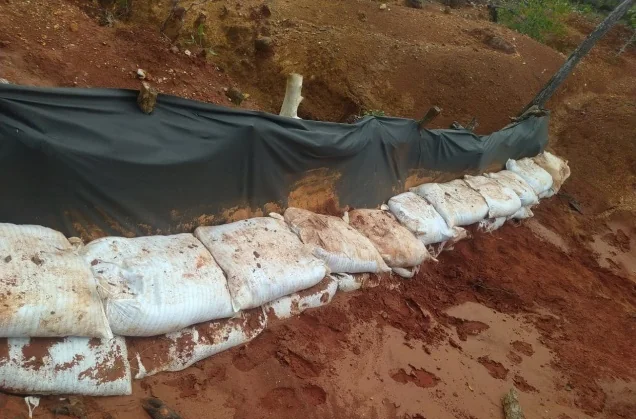
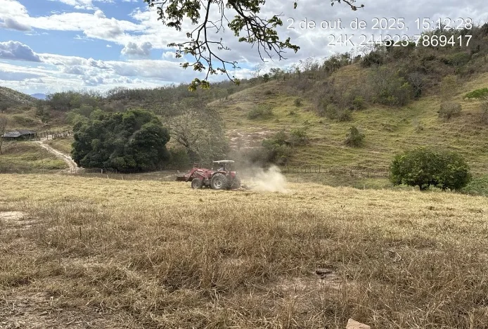

Descreva o que está acontecendo, onde fica a área, qual o objetivo e quais documentos existem. O próximo passo é estruturado a partir dessas informações.
Começar diagnósticoO que está acontecendo.
Área, prazo e objetivo.
Mapa, foto, laudo ou documento.
Escopo técnico adequado.